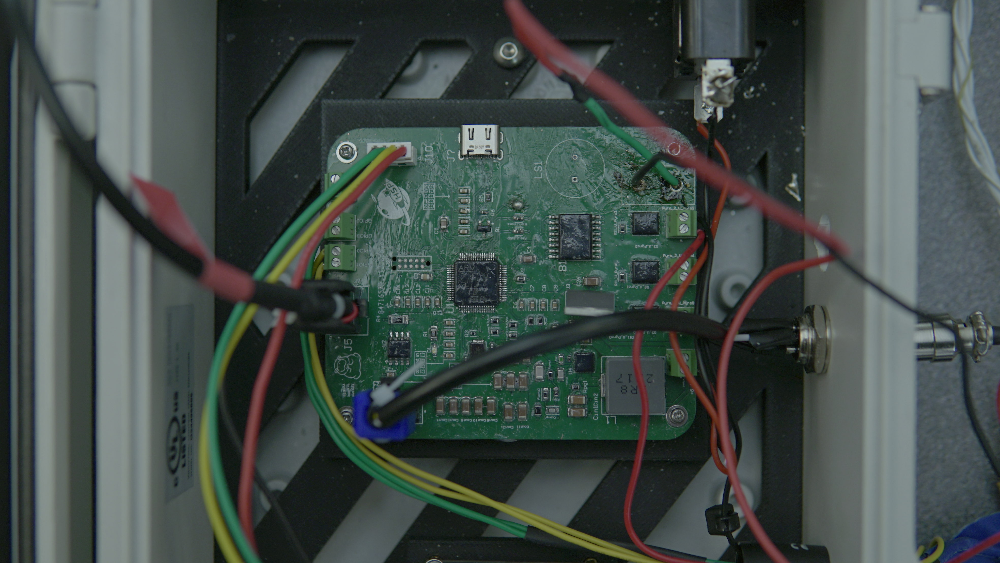

Highlander Space Program | Avionics Hardware Lead
Supporting liquid rocket avionics through PCB design, bring-up, validation, and field integration across the test stack.
Designing robust PCB hardware for real-world deployment.
Club & Project Experience
Highlander Space Program | Avionics Hardware Lead
Supporting liquid rocket avionics through PCB design, bring-up, validation, and field integration across the test stack.
Project Trident | Hardware Design Lead
Designing custom underwater vehicle electronics spanning power, control, integration, and propulsion-system hardware.
Explore My Projects.



Highlander Space Program
Project Poseidon // Avionics Hardware Lead
Designed a 4-layer STM32-based Pad Controller PCB to command liquid rocket valve actuation and ignition. Integrated CAN and UART interfaces with ground support equipment for reliable control and telemetry flow during operations.
Defined PCB stackup, component selection, and mixed-signal routing, then supported hardware bring-up and validation using staged power-up, oscilloscopes, multimeters, and bench supplies before field integration. Contributed to bring-up and verification across 10+ avionics PCBs in the campaign.


Highlander Space Program
Project Clementine // Ground Information Controller
Designed an STM32-based ground interface PCB integrating Ethernet, CAN, UART, USB, SPI Flash, and MicroSD to support engine telemetry, valve control, and high/full-speed data logging in a single field-ready controller.
Completed the workflow from CAD to assembly and test bench validation, including CAN communications verification, firmware integration, and end-to-end interface bring-up across the ground test stack.


Highlander Space Program
Project Clementine // Ground Interface Revision
Revised the ground interface PCB into a more compact GIC LITE architecture, reducing board area by 57% while expanding control and protection capability and reducing BOM cost.
Added 3-channel MOSFET servo actuation, dual pyro ignition firing circuits, fused protection on the 3.3V and 8V rails, and high-side MOSFET load switching.


Highlander Space Program
Project Clementine // Embedded Hardware Integration
Designed a sensor panel connector interface for the DAQ box, creating a clean and serviceable front-end connection point between external sensors and the data acquisition hardware.
The interface set included dedicated PCB layouts for 4-pin, 3-pin, and 2-pin connector groups, allowing each sensor channel type to integrate into the enclosure with clear routing, easier troubleshooting, and more reliable system bring-up during test operations.


Highlander Space Program
Project Clementine // Actuation Control Hardware
Designed a dedicated servo control PCB to drive multiple actuation channels from a compact embedded platform, combining local control electronics, connectorized outputs, and clean routing for reliable subsystem integration.
Developed the board from CAD through fabrication, building out the multi-channel servo pathway alongside CAN-linked interfaces and power circuitry to support bench validation and future integration into larger avionics and controls systems.


Project Trident
Designed and assembled a custom motor board PCB for underwater propulsion testing, combining control electronics and robust power-path hardware into a compact, field-deployable layout.
Drove the hardware workflow from CAD through bring-up: bench power validation, microscope-level inspection and rework, subsystem wiring, and integration with the Trident platform and thruster test hardware.

Project Trident Photo Reel
Platform View
The platform architecture ties propulsion, control electronics, and enclosure strategy into one modular underwater test vehicle.

Physical Test Stand
The physical Trident apparatus is a bench-ready electronics test stand used to evaluate custom embedded hardware, packaging, and system integration in a controlled environment. A water-sealed test article is planned next.

Tray Integration
This view highlights how the custom electronics package comes together on the tray assembly, showing the physical layout, board-to-board fit, and integration approach used for the Trident test stand hardware.

Initial Power-Up
This first bring-up video captures the motor board waking up on the bench, marking the point where the custom power and control hardware begins responding as a real integrated system.
CAN Bring-Up
This video captures early validation of the motor board as the CAN pathway and control interface come online together, confirming the board can participate correctly in the wider Trident electronics stack.
Next Mission
Right now school and other work are taking most of the bandwidth, but the project is still moving forward. The plan is to keep building toward a water-ready version and get Trident in the water in the near future.

Electrical engineering student focused on embedded hardware, PCB design, system bring-up, and integration work across rocket avionics and underwater electronics platforms.

Armando Zepeda
Electrical Engineering Portfolio
Project Photo Book
A premium visual walkthrough of the boards, bench work, bring-up moments, and integration details that define the portfolio.
Operations
At the controls, hardware work turns into live operations, where clean interfaces and trustworthy systems support every call.

CAN Validation
Early validation through the interface helps prove command flow, system response, and communication integrity before wider integration.
Avionics Team
Behind every cold-flow or static-fire win is a crew handling electronics, troubleshooting, and test-day execution together.

Summer 2026 // Hiawatha, Iowa
Electrical Engineering internship focused on ruggedized systems, hands-on lab execution, and deployment-oriented hardware support.